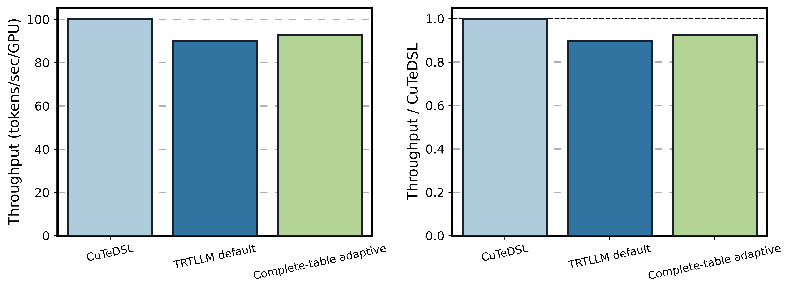

Qwen3-235B MXFP8 Adaptive Canary
Ptyche job 2504096, vLLM 0.25.1, FlashInfer 0.6.13, CUDA Graph, two TP4/EP4 replicas.

| Backend policy | tokens/sec/GPU | vs CuTeDSL | Generation time (s) |
|---|---|---|---|
| CuTeDSL | 100.31 | 1.000x | 326.665 |
| TRTLLM default | 89.82 | 0.895x | 364.813 |
| Complete-table adaptive | 92.92 | 0.926x | 352.662 |
Decision: Do not enable the complete-table adaptive policy for this workload.
The complete offline table covered all five observed GEMM signatures and passed numerical and CUDA Graph microbenchmark gates. Since this matched end-to-end run did not improve on CuTeDSL, GSM8K was not promoted for this candidate.